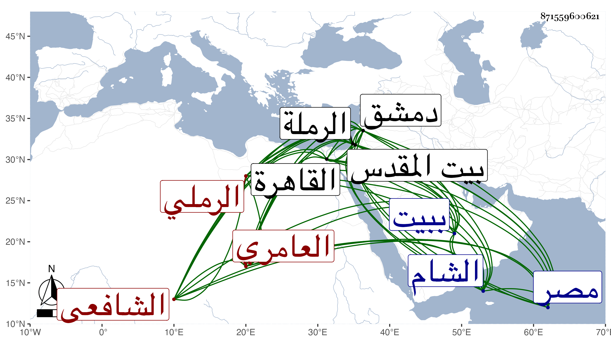

0902Sakhawi.DawLamic.ITO20230111-ara1.EIS1600.871559600621
Biography ID: 871559600621
أحمد بن عبد الرحمن بن أبي بكر بن أحمد بن منصور بن نعيم بالفتح ككبير الشهاب أبو الأسباط العامري نسبه لقبيلة بني عامر الرملي الشافعي ويعرف بكنيته . ولد سنة خمس أو ست وثمانمائة تقريبا بالرملة ونشأ بها فقرأ معظم القرآن عند الشهاب بن رسلان وصحبه إلى أن مات وحفظ الحاوي وجمع الجوامع وألفية ابن مالك وعرض على جماعة منهم الولي بن العراقي وشيخنا وأجاز له بل أخذ عن ثانيهما النخبة وغيرها وأذن له في الإقراء وتفقه بابن رسلان وبالشمسين المالكي نسبة الشافعي والبرماوي عنه أخذ العربية والأصول وغيرهما ، وسمع ببيت المقدس على القبابي وابن بردس وغيرهما كالشمس بن الديري فإنه حضر عليه في صغره وبالخليل علي التدمري جزءا ابن عرفة وبدمشق على ابن ناصر الدين وغيره ودخل الديار المصرية غير مرة وكذا دخل الشام وحج وزار وتصدى للإقراء فكان ممن أخذ عنه أبو العباس القدسي الواعظ . وولي قضاء بلده في أواخر سنة أربع وأربعين حين كان الونائي قاضي دمشق فحسنت سيرته جدا وكثر ثناء الناس عليه وصرف عنها غير مرة ثم أعرض عن ذلك ولزم الاشتغال والأشغال والإفتاء والتجارة في الصابون وغيره وعرف بتمام الفضيلة حتى صار عالم بلده وربما نظم الشعر مع الإقبال على العبادة وسلوك طريق الخير ومزيد التواضع واقتفاء طريق السلف وصدق اللهجة والمحاسن الجمة ، وقد لقيته ببلده فأخذت عنه أحاديث ثم كثر اجتماعي معه بالقاهرة وأرسل إلي بمصنف له أفرده لرجال البخاري استمد فيه من تهذيب شيخنا وأصله فأصلحته له ، وقطن ببيت المقدس بأخرة حتى مات في رمضان سنة سبع وسبعين . وقد ترجمه البقاعي مرارا مراعيا التعرض لبعض رفقائه فقال أنه ليس في تلامذة ابن رسلان مثله علما وعقلا وأنه برع في الفقه والنحو والأصول وغيرها وكتب الكثير بخطه الحسن السريع وعنده عقل وافر وتواضع كثير وصلاح وسكينة وبشر للأصحاب وتودد مع تؤدة وشكل مقبول وسمت حسن وليس في الرملة الآن من يدانيه علما ودينا وعقلا ، ووصفه بالإمام العلامة قاضي الرملة وعالمها رحمه الله وإيانا .
